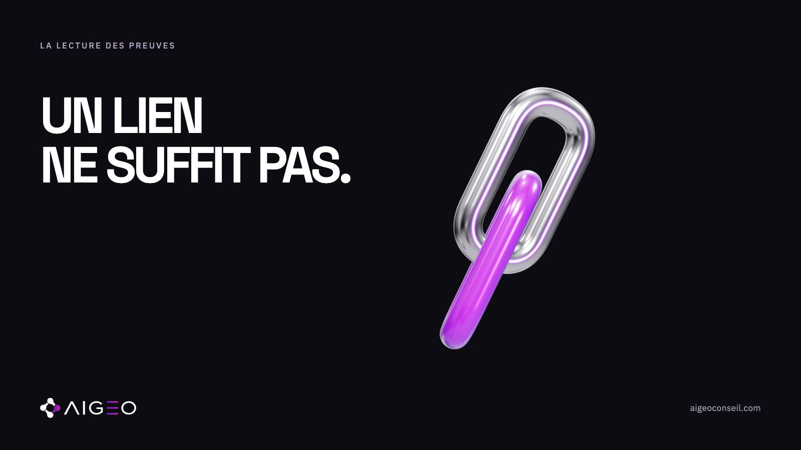
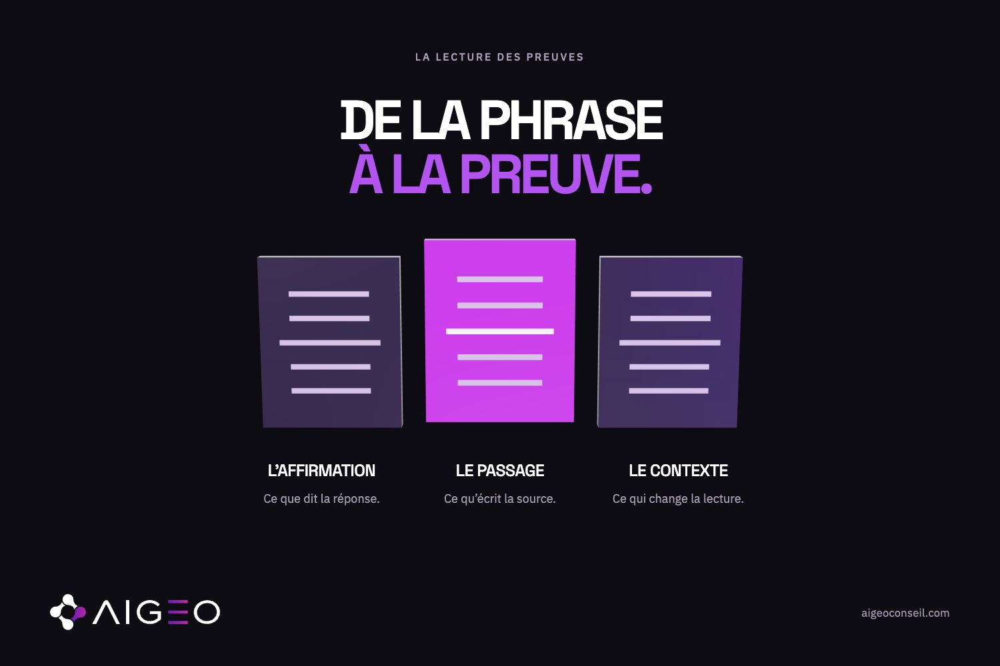

Une réponse IA accompagnée de liens semble plus facile à évaluer qu’un texte sans références. Pourtant, la présence d’une citation ne dispense pas de lire la page. Pour une entreprise, la question utile est précise : la source visible soutient-elle réellement l’affirmation faite sur son offre, son positionnement ou son adéquation à un besoin ?
Le point de départ documentaire
Anthropic explique que la recherche web de Claude fournit des citations pour faciliter la vérification des sources. Ce périmètre ne permet pas de présumer le comportement de tous les assistants. Source : recherche web de Claude.
Le protocole qui suit est une méthode de lecture proposée par AIGEO. Aucun test client ni aucune comparaison d’assistants n’a été réalisé pour cet article. Son intérêt est de rendre une observation compréhensible et vérifiable par une autre personne.
Isoler une affirmation avant de cliquer
Une réponse peut contenir plusieurs informations : catégorie de produit, public visé, avantage, disponibilité ou conseil de choix. Vérifier tout le paragraphe en une seule fois produit souvent une conclusion vague. Nous proposons de commencer par une phrase courte et de conserver sa formulation exacte.
Prenons un exemple fictif : « cet outil convient aux petites équipes qui veulent gérer leurs devis ». On cherchera le soutien à cette adéquation précise. Une page qui indique seulement que le produit aide les entreprises à travailler ne suffit pas à établir toutes les conditions de la phrase.
Retrouver le passage et son contexte
Une fois le lien ouvert, cherchez le passage correspondant. Regardez aussi les lignes qui l’entourent. Une fonctionnalité peut dépendre d’une formule payante, d’un pays, d’une version ou d’un usage particulier. Ces conditions font partie de l’information à vérifier ; les supprimer change la portée du message.

Il est également utile d’identifier la nature de la page. Une documentation officielle, un article de comparaison et une page commerciale n’ont pas le même rôle. Cette distinction ne crée pas une hiérarchie automatique de confiance : elle précise qui parle, de quoi et dans quelles conditions.
Qualifier le soutien sans forcer une conclusion
Notre grille peut rester simple : passage retrouvé et cohérent, soutien partiel, ou soutien non retrouvé dans la page consultée. La dernière catégorie ne veut pas dire que l’information est nécessairement fausse. Elle indique une limite de vérification, avec le temps et les accès disponibles.
Il faut aussi distinguer une page inaccessible d’une page qui contredit le texte. Dans le premier cas, la vérification reste incomplète. Dans le second, on conserve les formulations concernées pour comprendre l’écart. Ces deux situations appellent des suites différentes dans un dossier de travail.
Conserver une trace utilisable
Un relevé utile associe l’affirmation, le lien ouvert, le passage retenu et la date de consultation. On ajoute les réserves identifiées et, si nécessaire, une capture autorisée. Cela permet à un collègue de suivre le raisonnement sans refaire toute la recherche ni dépendre d’un souvenir oral.
Cette méthode ne révèle pas pourquoi un système a choisi cette source. Elle documente ce qui est visible dans une observation donnée. Elle n’établit pas non plus que la marque sera recommandée lors d’une prochaine demande. Pour cela, il faudrait de nouvelles observations avec un contexte explicite.
Commencez par une seule affirmation lors de votre prochain relevé. Ouvrez son lien, retrouvez le passage et écrivez ce qu’il soutient réellement. Pour AIGEO, la qualité d’un diagnostic tient aussi à cette capacité à expliquer précisément sur quoi repose sa conclusion.
Sources consultées
- Anthropic — Claude web search · vérifiée le 2026-10-07